Quickstart¶
To get quickly up to speed lets try an example run using TauREx3. We will be using the examples/parfiles/quickstart.par
file as a starting point and examples/parfiles/quickstart.dat as our observation. Copy these to a new folder somewhere.
Prerequisites¶
Before reading this you should have a few things on hand. Firstly H2O and CO2 absorption cross sections
in one of the Supported Data Formats is required. This example assumes cross-sections at R=10000.
Secondly some collisionally induced absorption (CIA) cross sections are also
required for a later part for H2-He and H2-H2, you can get these from the HITRAN site.
Tip
A starter set of these cross-sections and cia can be found in this dropbox: https://www.dropbox.com/sh/13y33d02vh56jh2/AABxuHdrZI83bSgoLz1Wzb2Fa?dl=0
Setup¶
In order to begin running forward models we need to tell TauREx3 where our cross-sections are.
We can do this by defining an xsec_path for cross sections and cia_path for CIA cross-sections under the
[Global] header in our quickstart.par files like so:
[Global]
xsec_path = /path/to/xsec
cia_path = /path/to/cia
Forward Model¶
Using our input we can run and plot the forward model by doing:
taurex -i quickstart.par --plot
And we should get:
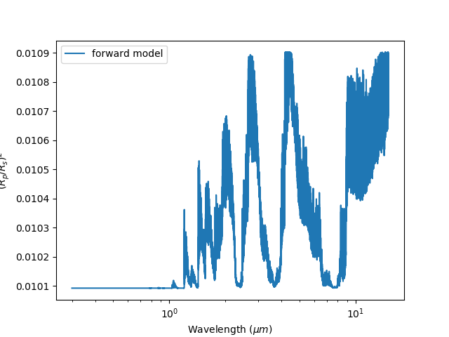
Our first forward model¶
Lets try plotting it against our observation. Under the [Observation] header
we can add in the observed_spectrum keyword and point it to our quickstart.dat file like so:
[Observation]
observed_spectrum = /path/to/quickstart.dat
Now the spectrum will be binned to our observation:
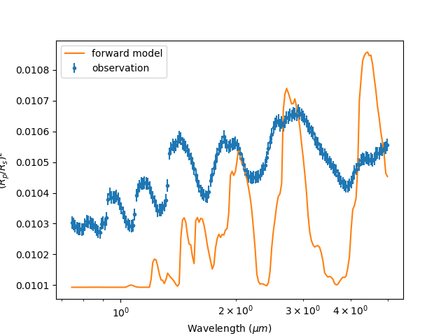
Our binned observation¶
You may notice that general structure and peaks don’t seem to match up with observation. Our model doesn’t seem to do the job and it may be the fault of our choice of molecule. Lets move on to chemistry.
Chemistry¶
As we’ve seen, CO2 doesn’t fit the observation very well, we should try adding in another molecule.
Underneath the [Chemistry] section we can add another sub-header with the name of our molecule, for this
example we will use a constant gas profile which keeps it abundance constant throughout the atmosphere,
there are other more complex profiles but for now we’ll keep it simple:
[Chemistry]
chemistry_type = taurex
fill_gases = H2,He
ratio=4.8962e-2
[[H2O]]
gas_type = constant
mix_ratio=1.1185e-4
[[CO2]]
gas_type=constant
mix_ratio=1.1185e-4
[[N2]]
gas_type = constant
mix_ratio = 3.00739e-9
Plotting it gives:
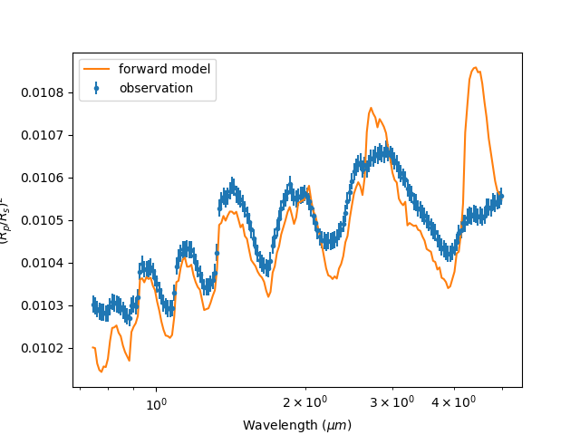
We’re getting there. It looks like H2O is definately there but maybe CO2 isn’t? Lets try it
by commenting it out:
[Chemistry]
chemistry_type = taurex
fill_gases = H2,He
ratio=4.8962e-2
[[H2O]]
gas_type = constant
mix_ratio=1.1185e-4
#[[CO2]]
#gas_type=constant
#mix_ratio=1.1185e-4
[[N2]]
gas_type = constant
mix_ratio = 3.00739e-9
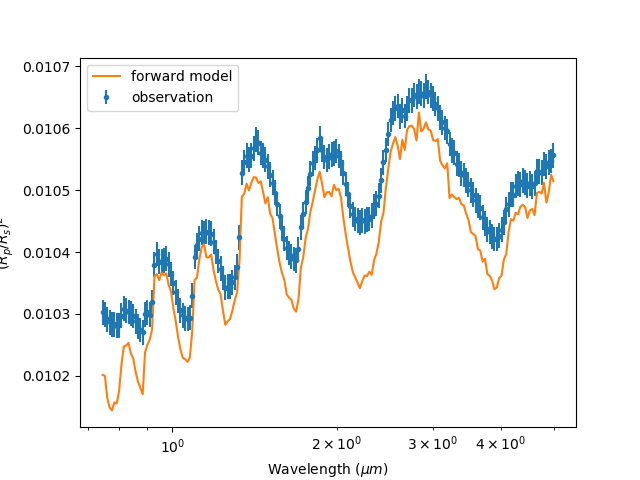
Much much better! We’re still missing something though…
Contributions¶
It seems moelcular absorption is not the only process happening in the atmosphere. Looking at the shorter
wavelengths we see the characteristic behaviour of Rayleigh scattering and a little from collisionally
induced absorption. We can easily add these contributions under the [Model] section of the input file.
Each contribution is represented as a subheader with additional arguments if necessary. By default we have
contributions from molecular [[Absorption]]
Lets add in some [[CIA]] from H2-H2 and H2-He and [[Rayleigh]] scattering to the model:
[Model]
model_type = transmission
[[Absorption]]
[[CIA]]
cia_pairs = H2-He,H2-H2
[[Rayleigh]]
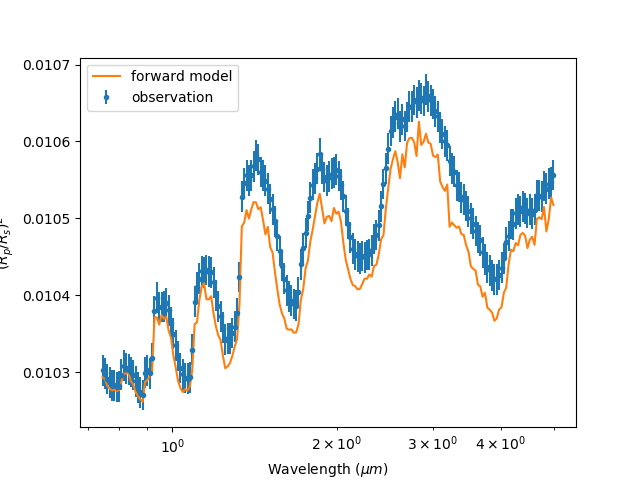
Hey not bad!! It might be worth seeing how each of these processes effect the spectrum. Easy, we can run
taurex with the -c argument which plots the basic contributions:
taurex -i quickstart.par --plot -c
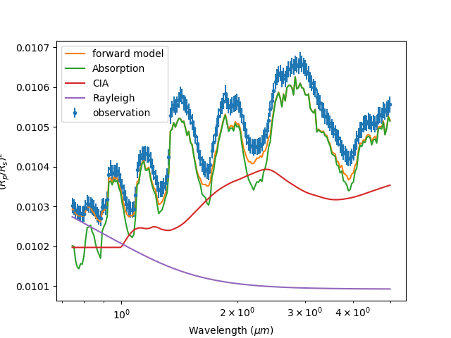
If you want a more detailed look of the each contribution you can use the -C option instead:
taurex -i quickstart.par --plot -C
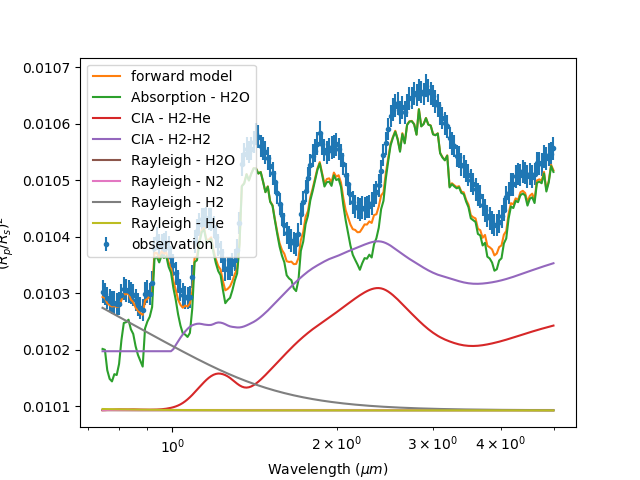
Pretty cool. We’re almost there. Lets save what we have now to file.
Storage¶
Taurex3 uses the HDF5 format to store its state and results. We can accomplish this by
using the -o output argument:
taurex -i quickstart.par -o myfile.hdf5
We can use this output to plot profiles spectra and even the optical depth! Try:
taurex-plot -i myfile.h5 -o fm_plots/ --all
To plot everything:
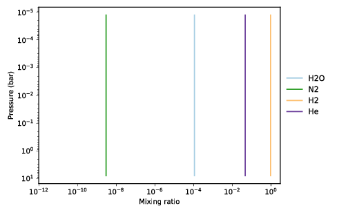 Chemistry¶ |
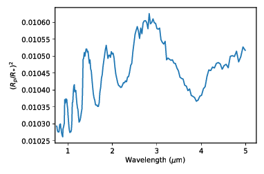 Spectrum¶ |
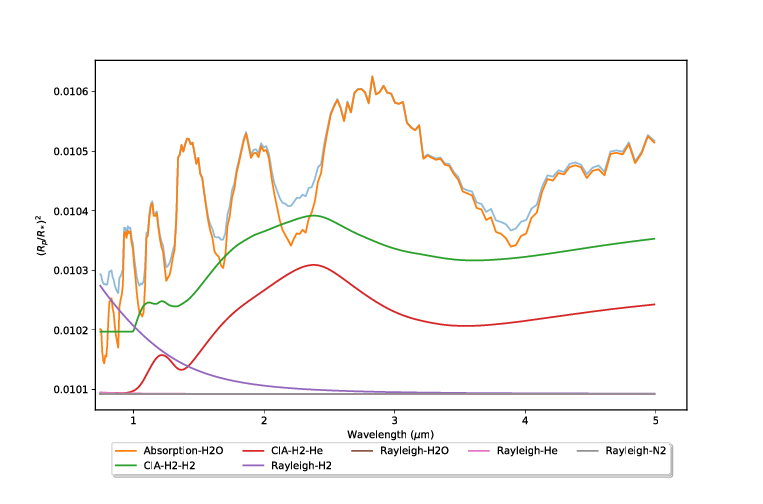 Contributions¶ |
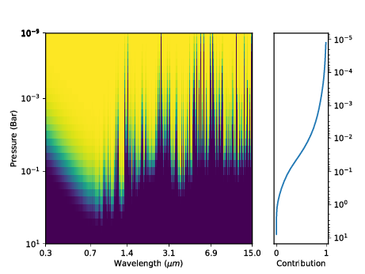 Optical depth¶ |
HDF5 has many viewers such as HDFView or HDFCompass and APIs such as Cpp, FORTRAN and Python.
Pick your poison.
Retrieval¶
So we’re close to the observation but not quite there and I suspect its the
temperature profile. We should try running a retrieval. We will use nestle as our optimizer of choice
but other brands are available. This has already be setup under the [Optimizer] section of the input
file so we will not worry about it now. We now need to inform the optimizer what parameters we need to fit.
The [Fitting] section should list all of the parameters in our model that we want (or dont want) to fit
and how to go about fitting it. By default the planet_radius parameter is fit when no section is provided,
we should start by creating our [Fitting] section and disabling the planet_radius fit:
[Fitting]
planet_radius:fit = False
the syntax is pretty simple, its essentially parameter_name:option with option being either
fit, bounds and mode. fit is simply tells the optimizer whether to fit the parameter, bounds
describes the parameter space to optimize in and mode instructs the optimizer to fit in either linear
or log space.
The parameter we are interested in is isothermal temperature which is represented as T, and we will fit
it within 1200 K and 1400 K:
[Fitting]
planet_radius:fit = False
T:fit = True
T:bounds = 1200.0,1400.0
We don’t need to include mode as by default T fits in linear space. Some parameters such as
abundances fit in log space by default.
Running taurex like before will just plot our forward model. To run the retrieval we simply add
the --retrieval keyword like so:
taurex -i quickstart.par --plot -o myfile_retrieval.hdf5 --retrieval
We should now see something like this pop up:
taurex.Nestle - INFO - -------------------------------------
taurex.Nestle - INFO - ------Retrieval Parameters-----------
taurex.Nestle - INFO - -------------------------------------
taurex.Nestle - INFO -
taurex.Nestle - INFO - Dimensionality of fit: 1
taurex.Nestle - INFO -
taurex.Nestle - INFO -
Param Value Bound-min Bound-max
------- ------- ----------- -----------
T 1265.98 1200 1400
taurex.Nestle - INFO -
it= 393 logz=1872.153686niter: 394
It should only take a few minutes to run. Once done we should get an output like this:
---Solution 0------
taurex.Nestle - INFO -
Param MAP Median
------- ------- --------
T 1375.97 1371.71
So the temperature should have been around 1370 K, huh, and lets see how it looks. Lets plot the output:
taurex-plot -i myfile_retrieval.hdf5 -o retrieval_plots/ --all
Our final spectrum looks like:
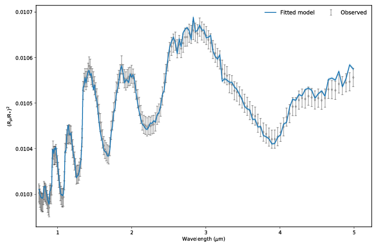
Final result¶
We can then see the posteriors:
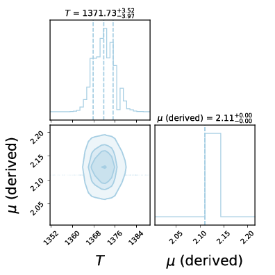
Posteriors¶
Thats the basics of playing around with TauREx 3. You can try modifying the quickstart to do other things! Take a look at Input File Format to see a list of parameters you can change!